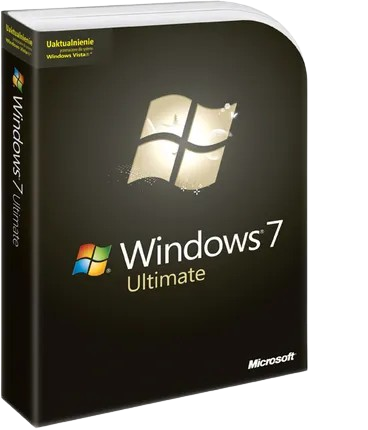
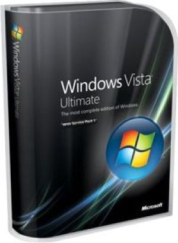
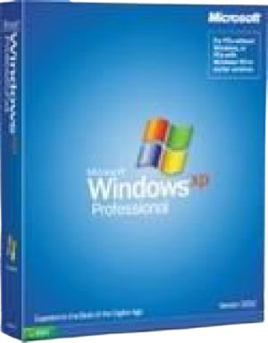
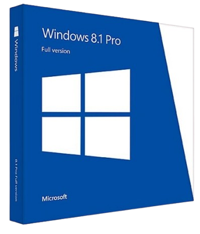

Aktualnie rozwijane projekty
Relive7 to modyfikacja systemu Windows 10 IoT Enterprise LTSC 2021, który normalnie nie ma praktycznie żadnego zainstalowanego bloatu, oprócz Microsoft Edge którego można odinstalować, a w dodatku ma wsparcie do 2032 roku! (może z ESU nawet do 2038 XD) W tej modyfikacji próbuje jak najbardziej dodać funkcje i poprawić wygląd, na ten co był znany z Windows 7.
ReliveVista to tak samo jak Relive7, modyfikacja Windows 10 IoT Enterprise LTSC 2021, która w tym przypadku przywraca wygląd i funkcje z systemu Windows Vista (jednego z najlepszych według mnie). Aktualnie pracuje nad nią, lecz powinna w krótce wyjść. Polecam sprawdzać stronę The Relive Team, aby zobaczyć czy wyszła ta modyfikacja, jeśli nie będe zbyt leniwy XD. Aktualnie jedyne co musze zrobić w tym modzie, to przywrócić trochę rzeczy do Panelu Sterowania, dać OOBE z Visty, i jakieś małe pierdolety naprawić.
ReliveXP to aktualnie najbardziej oczekiwana modyfikacja od The Relive Team, która tak samo jak Relive7 i ReliveVista, bazuje na dokładnie tym samym Windows 10 IoT Enterprise LTSC 2021, która w tym przypadku, próbuje przywrócić jak najwięcej fukcji z systemu Windows XP, jak i jego legendarny wygląd Luna, a w dodatku inne motywy typu Embedded, Royale/Royale Noir i Zune. Aktualnie ten projekt jest zastopowany, aby skupić się na Relive7 i ReliveVista.
Relive8.1 to dokładnie to samo co poprzednie 3 modyfikacje. Bazowany na Windows 10 IoT Enterprise LTSC 2021, która próbuje przywrócić wygląd i funkcje z systemu Windows 8.1 (który dla mnie też był jednym z lepszych, jedynie M$ za bardzo postanowił pójść w tablety). Wydaje się łatwe, lecz jest to o wiele trudniejsze niż ludzie myślą. Czy to aplikacje UWP który były tylko w pełnym ekranie, lub ekran startowy, są bardzo trudne do przywrócenia. Aktualnie ten projekt jest zastopowany, aby skupić się na Relive7 i ReliveVista.
